DIY Mini Brands
Apr 29 - Written by Bonnie and Emily
Following our trend of Internet things, we decided to make our own version of the popular Mini Brands items that have been floating around! But, instead of the typical snacks and foods that the company already creates, we chose some of our favorite Asian brands.
If you aren't familiar with what Mini Brands are, they’re essentially miniature versions of your favorite snacks and foods you can find in your grocery store. From your favorite frozen foods to spices and condiments, Mini Brands has them all. Since they are miniature versions of the real thing, lots of people buy them as collectibles that sadly, don’t actually contain any real food.
For our versions, we chose to use whatever supplies we had on hand to recreate our favorite snacks and foods as close to the real thing as possible. Bonnie went with some polymer clay and paint and Emily went with some paper, cardboard, and paint. Since all the items are so small, our biggest challenge was deciding the level of detail to go for to make it as realistic as possible. We’ve seen some videos of other people creating miniature items by using printed labels but that seemed too easy and honestly, kind of lame. Yes, their items are so cute and accurate but where’s the fun in just printing a smaller version of the real thing?
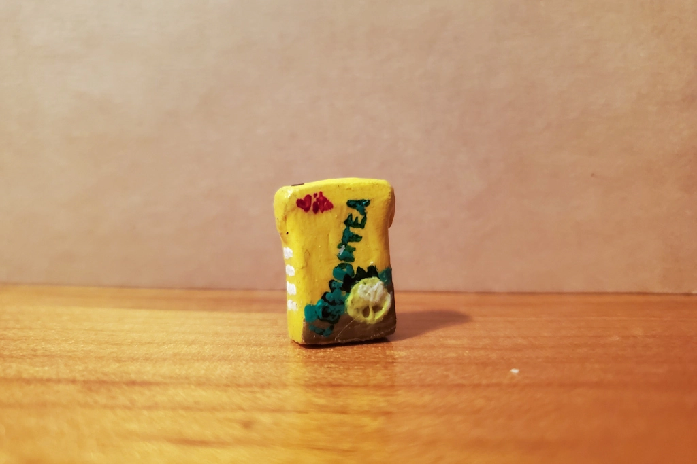After some initial planning, we both set out to work on our miniature snacks. Bonnie began with one of her favorites, Vita Lemon Tea. As one of her favorite drinks growing up, she was determined to make it as detailed as possible. Using polymer clay, she tried to mold the clay into a nice and clean rectangle and even tried to shape extra clay to put on top of the box as the small box flap that is typically folded over in the real lemon tea boxes. Since she had molded the clay by hand, it wasn’t that smooth and so she thought of a clever way to smooth the post-baked clay by using a nail filer! After smoothing down the clay, she had to start the most challenging part of creating her lemon tea, painting. Using a variety of different tools from paint brushes to toothpicks, she tried to paint out as many tiny details in the clay as possible. Since the life sizes boxes typically have a glossy exterior, she even went in with some Mod Podge to make the painted clay look shiny.
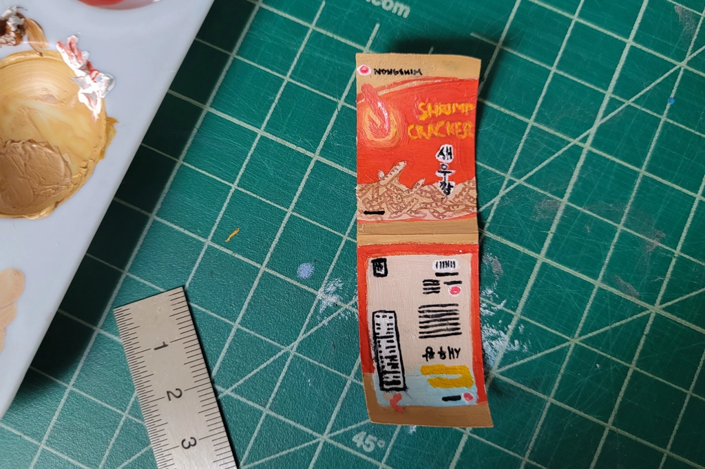Emily started off with a classic snack, Shrimp Crackers! Though she prefers the spicy kind because there is more flavor, she went with recreating the original as that is what she grew up eating. To recreate the bag, Emily went with cutting out some paper as she figured it was likely the closest material she had to a chip bag and so she set out on a long and tedious journey of painting. After a few hours of painting on all of the main pieces, she figured she could go in with some pens for the tiny details.
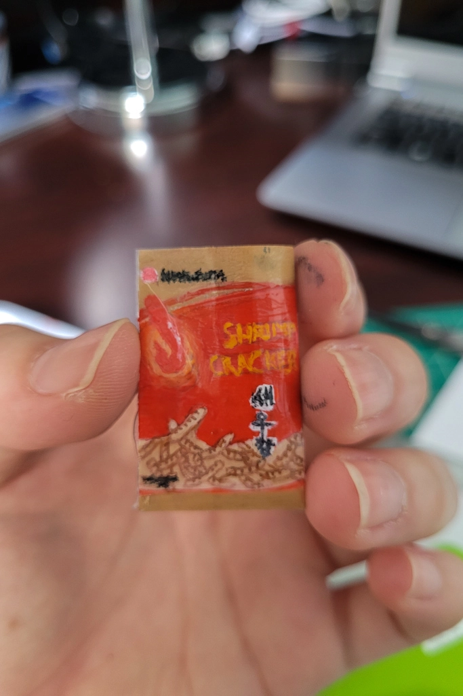
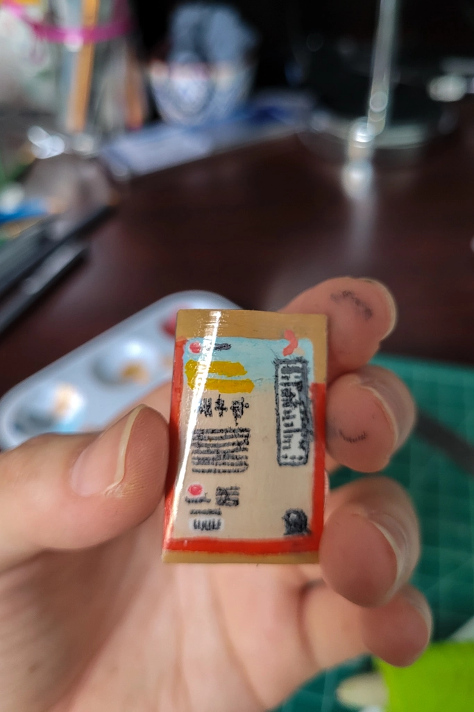
Little did she know, the pens would smudge...So after a long battle of drawing in the small details and fixing as much of the smudged lines as possible, she knew she had to find a solution to the pen smudging. So, she went with her favorite method, tape! Things were looking good for a while but as time went on, all of the details drawn in with a pen began to smudge and spread from the tape leaving her with a very smudged and blurry looking bag of shrimp crackers.
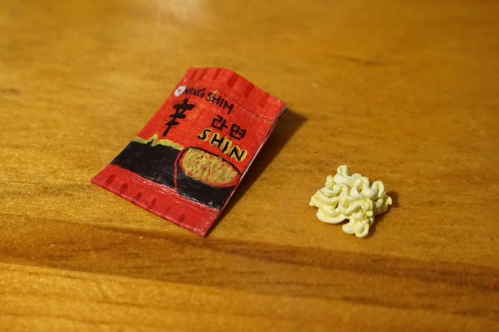Next up, we have a favorite among the both of us, Shin ramen. This is one of our favorite brands for ramen and thus, we had to recreate it. Bonnie made the packaging out of cardstock, tinfoil, and paint and made the noodles out of polymer clay. Since she didn’t have to paint the small details on polymer clay like the lemon tea, she was able to use a larger variety of art tools to make the drawing a little easier since painting can be hard to control when painting on such a small area. Instead, she used a mix of pens and paint to get an extra accurate and detailed copy of what Shin ramen packaging typically looks like. To top it off, she glued some tin foil on the inside of the card stock to get that shiny metal look that the life sized packaging has. Next Bonnie made the actual ramen noodles using polymer clay by making individual strands of noodles that were layered on top of each other. The clay molding was tedious but so worth it for the end results since the mini clay ramen looked so realistic!
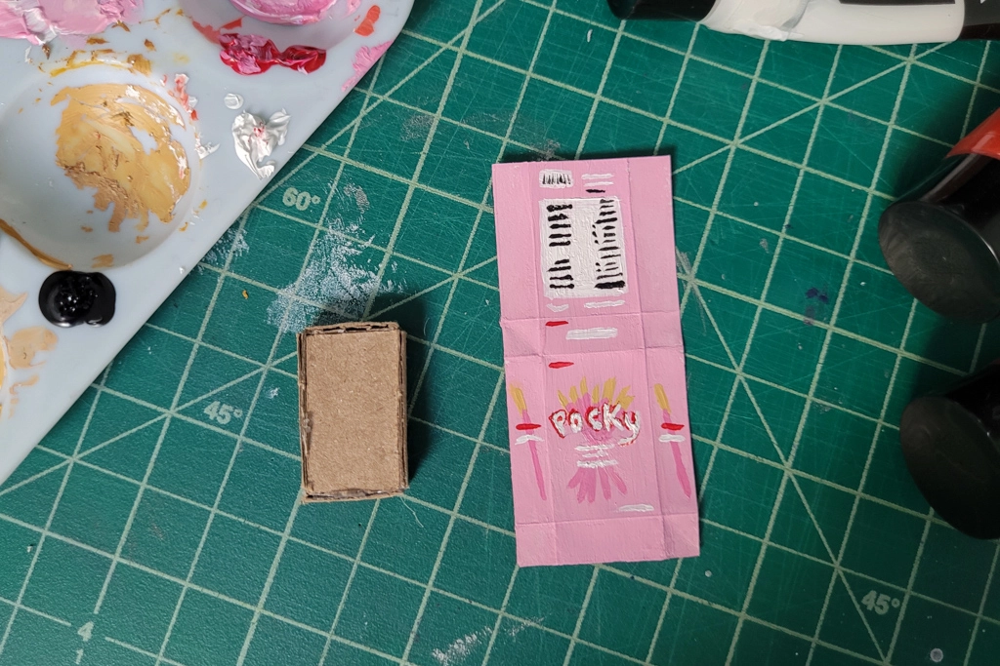Emily made another classic treat, Pocky! But, not just any Pocky, strawberry flavored Pocky because growing up, she ate a lot of that and it was her favorite (if she had to choose between chocolate and strawberry).
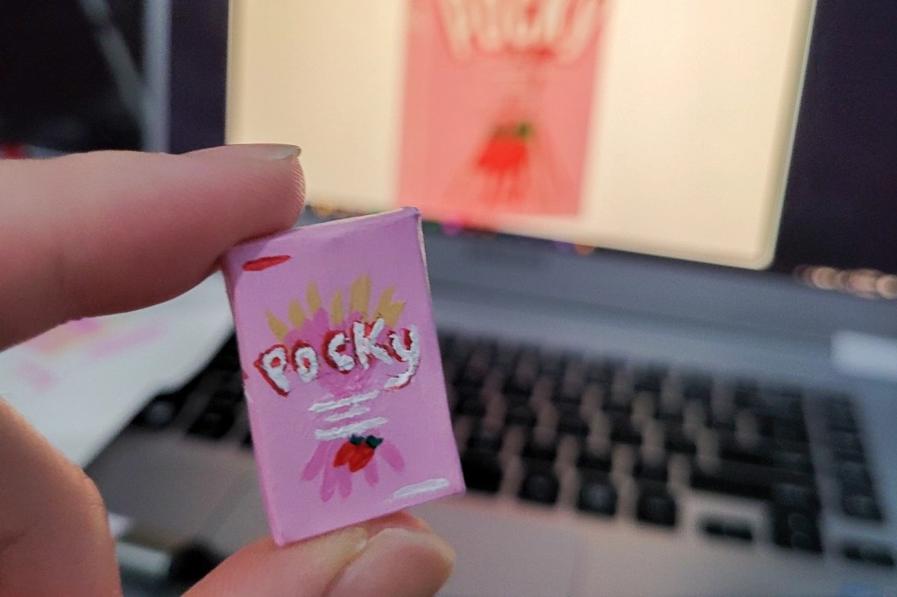For this miniature, she decided to make the box out of some cardboard and then wrap the cardboard with paper that's been painted to look like the outside of the Pocky box. This one took a bit more planning to get the correct proportions but after a while, she got it to work. She did make her box a little too small to function as an actual box that could have Pocky inside but the looks were quite close making this one her favorite recreation out of the three she made.
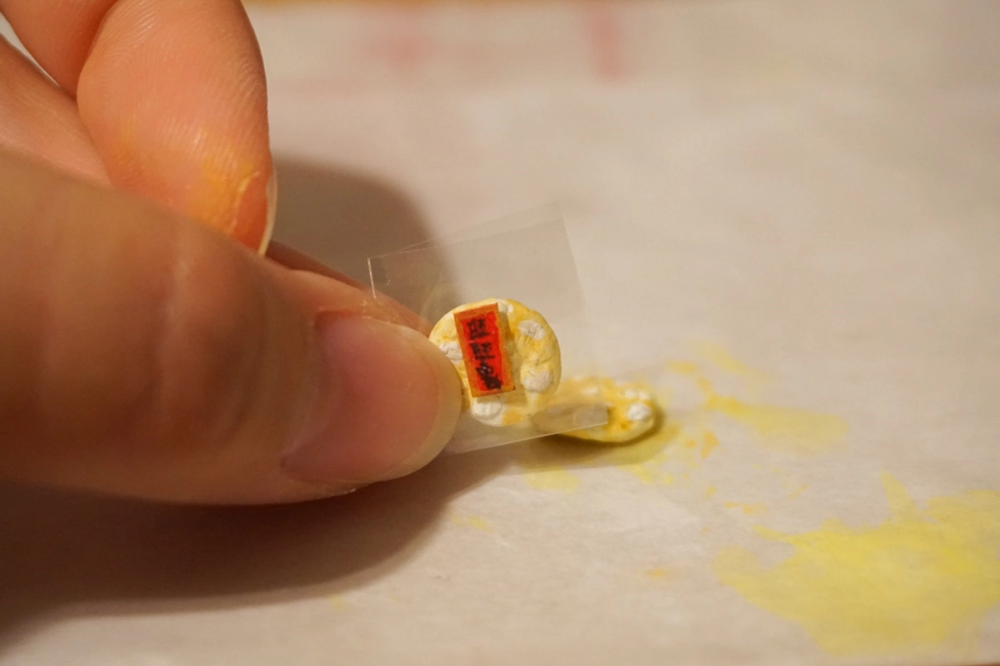Bonnie’s last and final snack is Wong Wong Snow crackers. One of the most popular and delicious snacks that she grew up eating, it was definitely on her mini brands list! She used polymer clay to make the individual crackers and even ripped off tiny pieces of clay to get the same bumpy texture that the life sized crackers have.
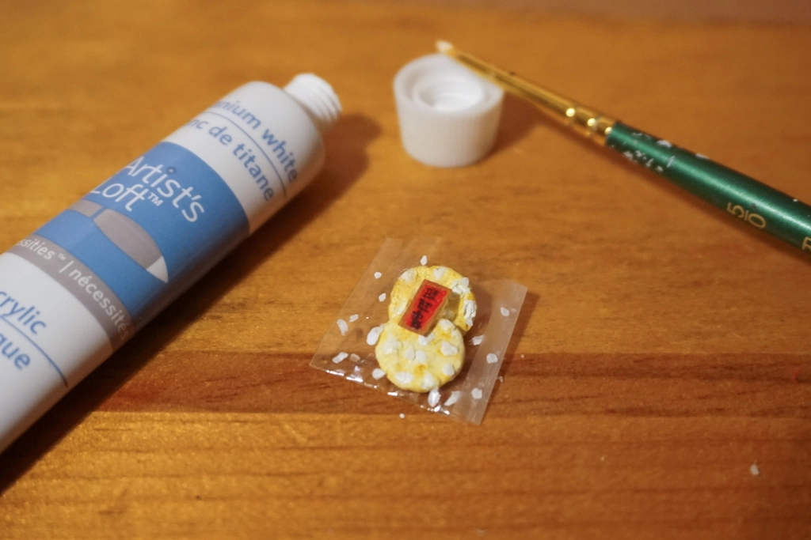Of course she also had to add the line indents on the bottom of the crackers before going in with some paint to wrap up her crackers! Since the packaging of the crackers are typically made out of clear plastic, she cut some plastic up from a leftover bag and taped it together to fit the clay crackers. To top it off, she painted a small logo out of cardstock to glue to the front of the plastic bag and even painted white dots on the mini packaging to wrap up her mini Wong Wong cracker!
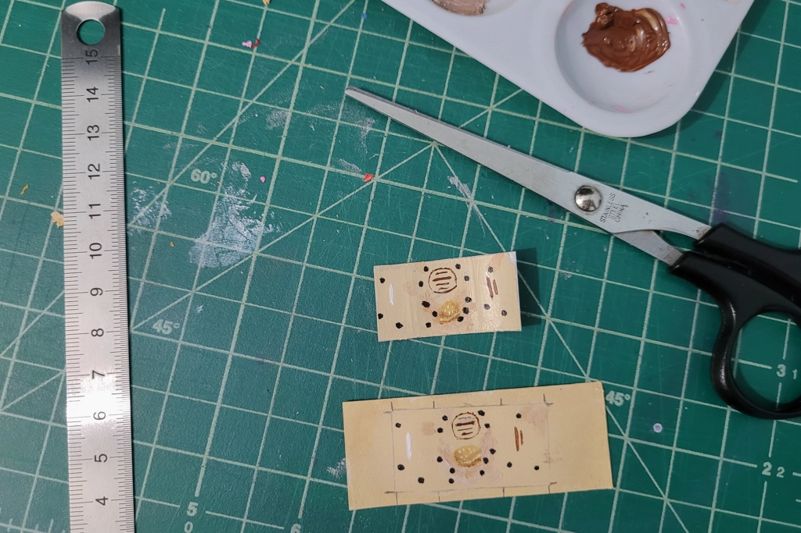When deciding what to make for her last snack, Emily was a bit stumped as she had already made the two things that she loved eating growing up and there weren’t many other items that she could think of making. But, that is when she spotted the Boba snacks from when we tried a bunch of different Boba snacks and she figured, why not make a Boba snack so that we would have a real item to compare size to? Now with an actual item to compare to, her main challenge was deciding on the size of the snack and whether she wanted it to be somewhat realistic when compared to the other snacks she made. Trial and error later, she finally settled on a size but she also figured she should try a slightly different method. So, instead of paper, she used part of a Ziploc bag and paint but also made a paper version as a backup in case the first option didn't work.
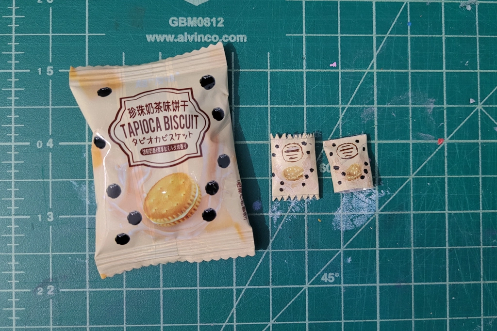A long period of painting later, she finally had something that resembled the Tapioca Biscuits she was trying to replicate. However, she realized she forgot to leave space for the trim so she opted to continue with her backup version that still had plenty of space for a trim. After adding in a temporary cookie made out of cardboard, this miniature turned out really cute and quite similar to the real thing!
After countless hours of modeling, painting, and constructing, we finally finished all our miniatures! With all six of our mini snacks/foods, we could open up a mini store called Bon & Em’s Favorites, a place to purchase all their favorite snacks and foods. This was a really fun project to do and if you don't want to just have mini items with no purpose, you can turn them into earrings or keychains or even little magnets. What’s great about this project is that you also don't need many supplies, you can make do with recycled materials and some paint and paintbrushes.